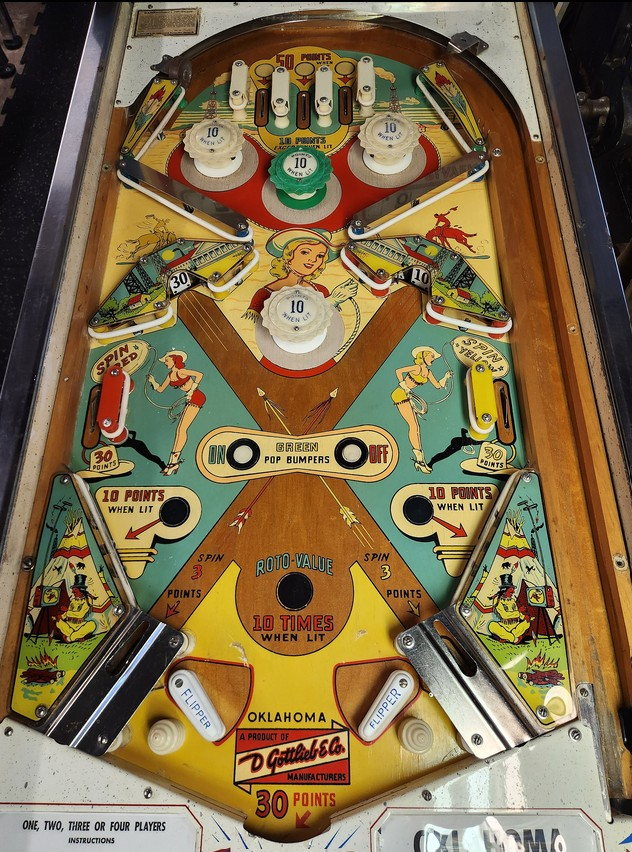

The upper third of the playfield is very detached from the rest by a large funnel-like structure and the lower pop bumper. Expect most gameplay to take place in the lower part of the playfield for the rest of the ball once the ball leaves the upper area.
1-point switch hits rotate which of the three top lanes and which of the three red bumpers (upper left, upper right, and lower) are lit. Top lanes score 10 points or 50 when lit. Pop bumpers score 1 point or 10 when lit. Only 1 top lane and 1 red bumper can be lit at any time.
The center green pop bumper and slingshots score 1 point or 10 when lit. They are lit or unlit by the On/Off Green Bumpers rollover buttons in the center of the playdield just above the flippers.
The roto-targets have panels reading 10, 20, 30, 40, and 50. Hitting a roto-target awards the displayed value. The left side lane scores 30 points and spins the right roto-target. The right side lane scores 30 points and spins the left roto-target. The kickers behind the flippers score 3 points, spin both roto-targets, then fire the ball at the opposite roto-target. If both roto-targets are on the same value, hitting one awards 10 times the displayed number, up to a maximum of 500 points. Larger numbers are less common on the roto-wheels.
The flipper gap is very wide, but the locations of targets and horizontal action of the ball make it a little more controllable than you might expect. There are no in or out lanes; the ball can only drain down the middle, and between the flippers and the edge of the table are the kickers and the slingshots. An end of ball bonus of 30 points is given every time the ball drains. Tilt ends game, but only for the player who tilted. There is no extra ball feature or playfield Special.
The below picture of Oklahoma's playfield was taken from Pinside, where it is image #4894167.
